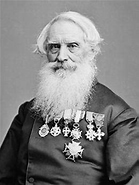

Samuel Morse est un scientifique américain né le 27 Avril 1791 à Charlestown et mort le 2 Avril 1872 à New York. Il a inventé le télégraphe en 1832 et biensûr le code Morse en 1838 qui est le langage utilisé pour le télégraphe. En 1840, Samuel Morse dépose un brevet pour son invention qui sera pour la suite validé.
Samuel Morse se concentre sur le télégraphe à partir de 1837 et s'associe avec deux partenaires, Leonard Gale un professeur de science à l'université de New York et Alfred Lewis Vail un machiniste et inventeur américain. Samuel Morse a l'idée du code Morse mais c'est Lewis Vail qui trouve la solution du code composé de points et de barres en 1838 : à l'origine Samuel Morse avait imaginé des codes composés uniquement de chiffres et un dictionnaire pour interpréter les messages reçus ce qui est beaucoup plus compliquer à déchiffrer que la solution de Lewis Vail. En 1838, il tente sans succès d'intéresser le Congrès américain de son invention et se tourne vers l'Europe qui refuse également. Samuel Morse dépose un brevet pour son télégraphe en 1840 et est accepté en 1854. En 1842, une ligne télégraphique sous-marine reliant l'île de Manhattan à Brooklyn et au Nouveau-Jersey est construite. En 1843, il réussit à obtenir du Congrès une aide de 30 000 $ pour établir une ligne télégraphique entre Baltimore et Washington. Le 24 mai 1844, le premier message est transmis de la Cour suprême du Capitole vers Baltimore et contient « What hath God wrought ». À partir de 1846, le télégraphe de Morse est développé plus largement aux Etats-Unis. En 1854, après plusieurs procès contre ses anciens partenaires et des rivaux, la Cour suprême américaine valide ses brevets.